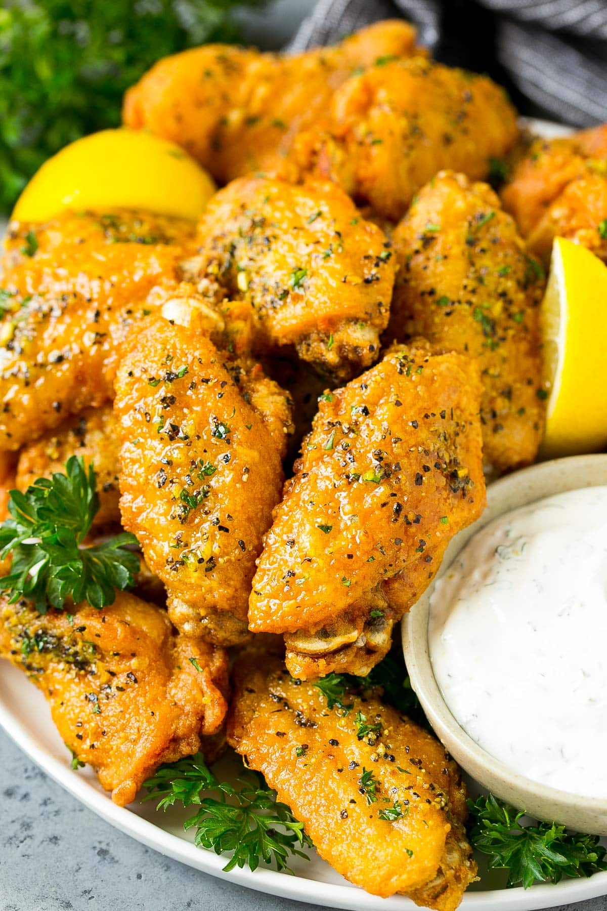

Lemon Pepper Wings Recipe

Description
Now that summer is here and family gatherings are starting to happen
again, it is time to impress your guests with these DELICIOUS Lemon Pepper
Wings that rival anything you can get from a restaurant! These wings have
the most amazing tangy, buttery glaze and crispy skin that my family can’t
get enough of. You only need a few simple ingredients, and they are super
easy to make. Whether it is for game day, a cookout, or just an easy
dinner, these wings are sure to be a winner!
Ingredients
- 3 lbs chicken wings party style wings cut into sections
- 1 cup all purpose flour
- 2 teaspoons salt
- 1 teaspoon pepper
- oil for frying
- 1/4 cup butter melted
- 1 1/2 tablespoons lemon pepper seasoning
- 2 tablespoons chopped parsley
- lemon wedges and parsley sprigs for serving optional
Steps
-
Place the flour in a large bowl and season with the salt and pepper.
Stir to combine.
-
Place the chicken wings in the bowl; gently toss the coat with flour
mixture.
- Heat 4 inches of oil in a large pot to 350 degrees F.
-
Add the chicken wings to the pot in batches of bout 6-8 wings. Fry for
10-12 minutes or until wings are deep golden brown and cooked through.
Repeat with remaining wings.
-
In a small bowl, combine the butter and lemon pepper seasoning. Brush
the butter mixture over the chicken wings and toss to coat. Sprinkle
with parsley and serve.
- Garnish with lemon wedges and parsley sprigs if desired.